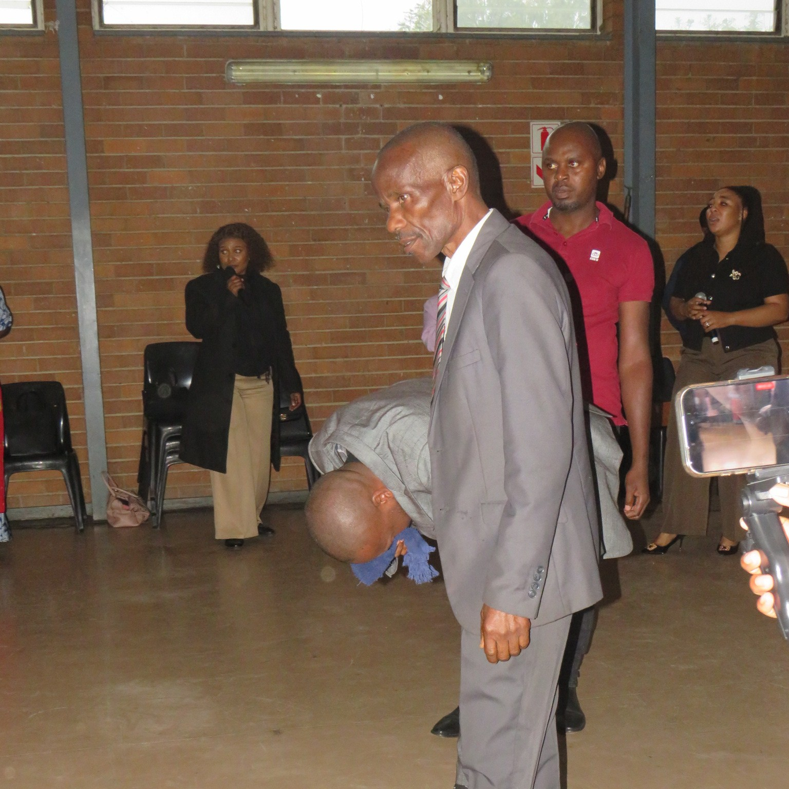

Shepherds & Leadership Team
Guided by the Holy Spirit, serving with integrity and love.

Apostle Rendani Khorommbi
Founding Apostle · Lead Pastor
Apostle Rendani Khorommbi carries a mandate for restoration and breakthrough. With a heart for counselling and deliverance, he has led thousands to Christ and pioneered multiple outreaches across Pretoria. His teaching emphasizes God’s unconditional grace and the power of the Holy Spirit.
Pastor Khase Takalani
Associate Pastor · Under Apostle Khorommbi
Pastor Khase Takalani serves under the covering of Apostle Rendani Khorommbi with dedication and humility. He assists in shepherding the congregation, leading worship sessions, and guiding new believers in their faith journey. His heart for discipleship and his commitment to the vision of Charis Missionary Church make him a vital part of the pastoral team.

Pastor Ntate Sithole (Elder)
Associate Pastor · Under Apostle Khorommbi
Pastor Ntate Sithole serves as a respected elder of Charis Missionary Church Pretoria West. He provides spiritual counsel, maintains church governance alongside Apostle Khorommbi, and oversees all community outreach initiatives. With a heart for the poor and marginalized, he coordinates food distribution, skills development programs, and local missions that demonstrate God's love in practical ways.